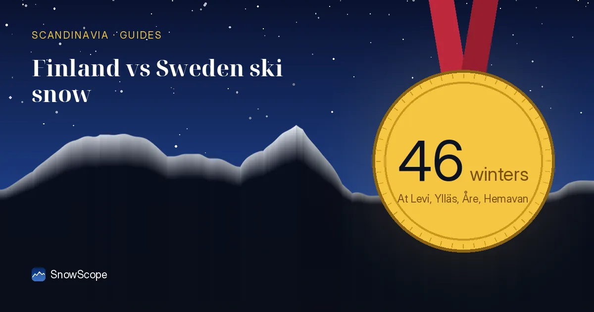

Finland vs Sweden ski snow: 46 winters at Levi, Ylläs, Åre, Hemavan
Finnish Lapland and the Swedish mountains sell the same promise: a long, white and reliable winter. Our snow history of 46 past winters (1980-81 to 2025-26) at eight resorts shows that they keep it in very different ways. Lapland is low but steady. Sweden is higher and far deeper in the north, but its southern resorts have lost snow.
See the live snow forecast for Åre in the SnowScope appSnow depth, powder alerts and the 3D map, free.

Where the season stands on 23 November 2026
On the upper slopes Sälen has 31 cm, Ruka 25 cm, Åre and Hemavan 21 cm each, Pyhä-Luosto 17 cm, Idre Fjäll 9 cm, Ylläs 8 cm and Levi 7 cm. Åre added 5 cm of new snow over the last 7 days.
Set against a usual November, Sälen (9 cm) and Ruka (15 cm) are ahead. Levi and Ylläs, where 20 cm is usual in November, are behind, and Hemavan is well behind its usual 68 cm at the top. A thin start says little about the winter, though: in Lapland the deep weeks come in February and March, and the history below shows how reliably they arrive.
Lapland: low fells, steady snow
The Finnish fells are small hills by Alpine standards. Levi tops out at 530 m, Ylläs at 717 m, Ruka at 494 m and Pyhä-Luosto at 489 m. What they lack in height they make up in cold. The usual winter peak is 78 cm at Levi, 81 cm at Ylläs, 76 cm at Pyhä-Luosto and 74 cm at Ruka.
The striking number is the floor. In the leanest of the 46 winters Levi still peaked at 60 cm and Ylläs at 63 cm. The richest winters reached 111 cm and 108 cm. Snow lies on the ground for about 209 days a year at Levi and Ylläs and 204 days at Ruka and Pyhä-Luosto, from around 19 to 21 October until around 20 May.
Sweden: two countries in one
In the far north Hemavan is in a class of its own. At the top (1136 m) the usual peak is 234 cm, between 160 cm in the poorest winter and 350 cm in the richest. Snow arrives around 25 September and stays until around 27 June, on 265 days of a usual year. Åre, the biggest ski area in the country, holds 115 cm at its top (1318 m) and snow on 216 days.
Further south, Sälen and Idre Fjäll look much more like Lapland in depth: a usual peak of 76 cm at Sälen and 82 cm at the top of Idre Fjäll. But their season is shorter, 180 days at Sälen and 199 at the top of Idre, and the gap between a poor and a rich winter is wider: from 38 cm to 120 cm at Sälen.
Who is losing snow
We compared the first 15 winters of the record with the last 15. In Lapland the usual peak has barely moved: Levi 77 cm then 79 cm, Ylläs 81 cm then 83 cm, Ruka 74 cm then 75 cm, Pyhä-Luosto 80 cm then 78 cm. Hemavan's top has held too, 237 cm then 244 cm.
Southern and lower Sweden tell another story. Sälen went from 88 cm to 72 cm, the top of Idre Fjäll from 85 cm to 73 cm, and Åre's base from 100 cm to 76 cm, while its top slipped from 121 cm to 113 cm. The season has shortened as well: Sälen from 191 to 173 snow days, the top of Åre from 230 to 203.
Last winter (2025-26) fits the pattern. Sälen peaked at 54 cm and Åre's base at 57 cm, while Levi reached its usual 78 cm.
Month by month: when each one is at its best
December is thin almost everywhere: the usual depth is 39 cm at Levi, 40 cm at Ylläs, 36 cm at Ruka, 49 cm at the top of Åre and 28 cm at Sälen. Hemavan is the exception with 115 cm at the top. By January Levi has 55 cm, Ylläs 57 cm, the top of Åre 76 cm and Sälen 48 cm.
March is the deepest month nearly everywhere: 66 cm at Levi, 69 cm at Ylläs, 94 cm at the top of Åre, 62 cm at Sälen and 207 cm at the top of Hemavan. Hemavan stays deep into April, with 213 cm.
Reliability is where the eight differ most. Counting the weeks with at least 50 cm in 9 winters out of 10, the top of Hemavan has 27, Ylläs 11, the top of Åre 10, Levi 9 and Ruka 5. Sälen has none: even its best week, week 8, had 50 cm in only 80 % of winters.
How to choose
For Christmas or early January, height and latitude matter most: Hemavan, or the upper half of Åre. In Lapland the December cover is thinner but the cold keeps it, so it suits families who ski groomed runs. Sälen in December is a gamble: in one December in ten the usual depth is 9 cm or less.
For a sure February week, Lapland is hard to beat: at Levi the best week is week 7, with 50 cm in 98 % of winters. For spring skiing in April, go north and high, to Hemavan or the top of Åre, where the usual April depth is still 93 cm.
Tips for skiers
- Book December trips high or far north: Hemavan and the upper slopes of Åre carry the most early snow.
- In Lapland, plan around February and March, when Levi and Ylläs are at their deepest and most reliable.
- In Sälen and Idre Fjäll, keep dates flexible before mid-January; the record shows wide swings from one winter to the next.
- Check the snow map the week before you travel; early-season depths change quickly.
- Off-piste in the Swedish mountains, read the official avalanche forecast first.
About these numbers
Snow numbers: SnowScope snow history, 46 past winters (1980-81 to 2025-26) at three heights of the resort (an estimate for an area, not resort reports). Lift, run and access facts: the sources listed below, checked on the date shown.
Official avalanche bulletins: Lavinprognoser (Naturvårdsverket)
Cite this report
For research, teaching or the press: the numbers and charts are free to reuse under CC BY 4.0 with this citation.
SnowScope (2026), Finland vs Sweden ski snow: 46 winters at Levi, Ylläs, Åre, Hemavan, https://snowscope.app/blog/en/2026/11/finland-vs-sweden-ski-snow-46-winters-levi-yllas-are-hemavan.html, accessed 2026-11-24
SnowScope (Atlas Labs). (2026, November 24). Finland vs Sweden ski snow: 46 winters at Levi, Ylläs, Åre, Hemavan. SnowScope snow reports. https://snowscope.app/blog/en/2026/11/finland-vs-sweden-ski-snow-46-winters-levi-yllas-are-hemavan.html
BibTeX
@misc{snowscope2026finlandvsswedenskisnow46,
author = {{SnowScope (Atlas Labs)}},
title = {Finland vs Sweden ski snow: 46 winters at Levi, Ylläs, Åre, Hemavan},
year = {2026},
month = nov,
howpublished = {\url{https://snowscope.app/blog/en/2026/11/finland-vs-sweden-ski-snow-46-winters-levi-yllas-are-hemavan.html}},
note = {Published 2026-11-24 10:02 UTC; accessed 2026-11-24}
}· CC BY 4.0 · Methods, data and tools →
Åre: snow and temperature by height, this winter vs last (tools) →
Follow Åre
Free: a message when fresh snow is coming, and the forecast every morning.
More snow reports

Levi December skiing: 38 cm on a typical 15 December, 91 % of winters with 30 cm in Christmas week, and December snow up, not down; day pass EUR 60, EUR 57 online.

Idre Fjäll December skiing: 32 cm mid-mountain on a typical 15 December; 65 % of winters with 30 cm in mid-December, 76 % in Christmas week. Honest odds.

Hemavan December skiing: 82 cm mid-mountain on a typical 15 December, every winter with 30 cm there in mid-December; the deepest December of our Nordic set.